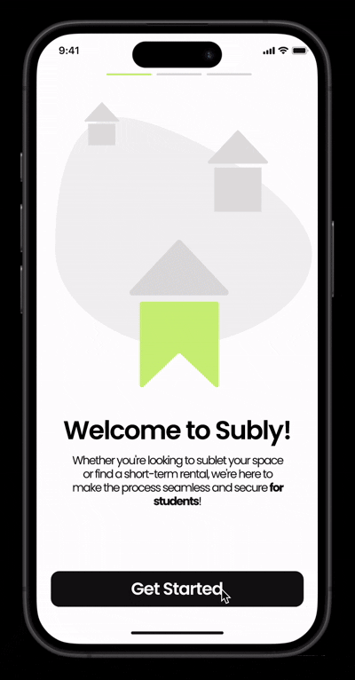
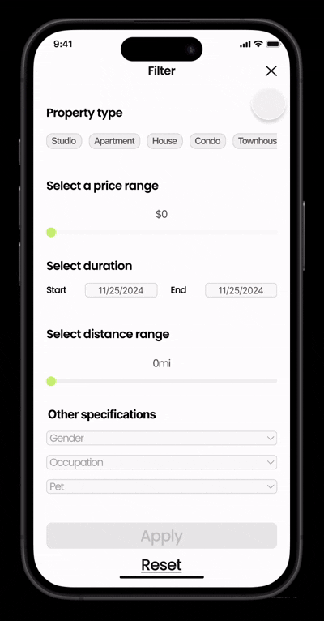
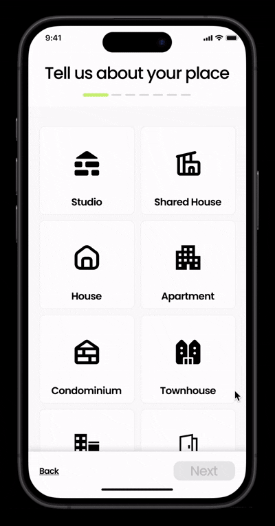

Subly
A safe, efficient subleasing platform tailored for college students
Timeline
October 2024 -
December 2024
Team(5)
Brandon Wong
Jennifer Yoon
Mikey McCarthy
Sam Mui Tsan
Skills
UX Research
UI/UX Design
Prototyping
Branding
Description
Subly is an intuitive subleasing platform tailored to the unique needs of college students, providing a safe, efficient, and streamlined process for subleasing and subletting apartments. The platform allows users to post, find, and manage listings all in one place, making it simple to connect with trusted peers seeking or offering short-term housing. The platform also promotes trust through its user-friendly interface and clearly displayed recommended listings. Designed with student-centric features, Subly offers a smooth, reliable experience that transforms the traditionally complex process of subleasing into a quick, secure, and accessible solution for students across a wide range of universities.
Motivation
The motivation behind designing Subly stems from the desire to improve the user experience for college students navigating the often stressful and time-consuming process of subleasing and subletting apartments. Many students struggle with finding trustworthy housing options or reliable tenants within a short timeframe, often turning to fragmented solutions that lack security and efficiency.
Research
The focus of this research session was to identify when users feel most overwhelmed during the subleasing/subletting process and what causes it.
The problem is divided into 2 main categories, which is:
1. Safety & reliability
2. Sophisticated process

Solution
Subly addresses these pain points by creating a platform tailored specifically for students, incorporating features that prioritize both simplicity and safety:
1. School email verification
A key highlight of Subly's commitment to safety is its university verification system, which requires users to sign up using a valid .edu email, ensuring that only verified students can participate in the subleasing community. By integrating a school email verification system, Subly fosters a secure community where users can trust that all members are affiliated with accredited universities.
2. Filtering feature
Featuring an advanced filtering system, Subly empowers users to efficiently search for apartments that match their specific preferences, including location, price, and amenities, saving time and effort. The streamlined filtering function enhances the user experience by enabling fast, personalized searches that match users' specific housing needs.
The goal was to create an intuitive, aesthetically pleasing platform that reduces the complexity of subleasing while building a trusted network of student renters, ultimately empowering users to focus on their academic and social commitments with peace of mind.
Final Design
1. Onboard Flow

2. Filtering Flow

3. Posting Flow
